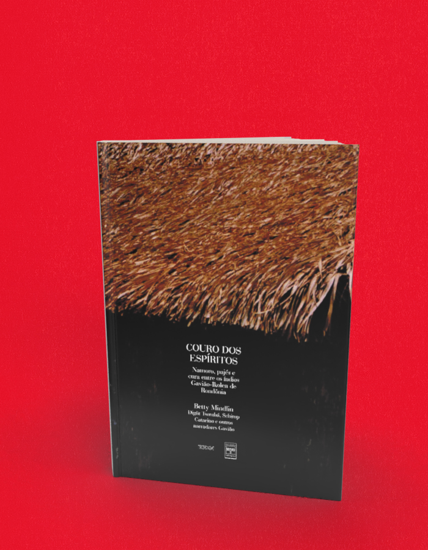

Couro dos espíritos
A compra acontece no site da livraria, em uma nova aba. Consulte lá os preços e a disponibilidade. Procure pelo título ou ISBN deste livro.
- Autoria / créditos
- Betty Mindlin
- Páginas
- 255
- Formato
- 16 x 23 cm
- Acabamento
- Capa flexível
Sobre o livro
Escrito pela antropóloga Betty Mindlin a partir das narrativas feitas pelos Gavião, de Rondônia, este livro representa um esforço rigoroso para a preservação dos principais mitos da tradição oral deste povo. Contando com ilustrações feitas pelos próprios Gavião, especialmente para esta edição, o livro registra histórias da origem e do fim do mundo e da humanidade, do surgimento dos seres e do fogo, da água, das chuvas e do sol, da vida além da morte, a alma e os espíritos, a doença e a cura, a pajelança, os monstros e os fantasmas, as guerras, o incesto e a sexualidade, o namoro e o amor.
Betty Mindlin é antropóloga, com doutorado pela Pontifícia Universidade Católica de São Paulo, e economista, com mestrado na Universidade de Cornell, EUA. Trabalha há muitos anos em projetos de pesquisa e apoio a grupos indígenas e é autora de mais de dez livros, entre os quais Diários da Floresta, também publicado pela Terceiro Nome. É vencedora do Prêmio Érico Vannucci Mendes de 2002.
← Voltar ao catálogo